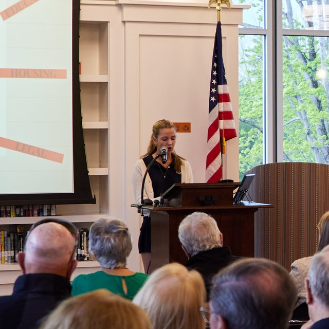
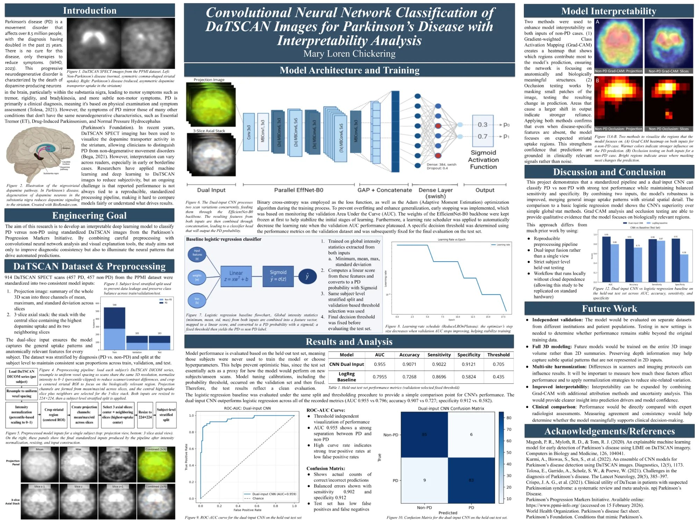

Greenwich Country Day School · Class of 2027
Mary Chickering
Projects/Roles
TigerHacks ↗
Co-Lead of TigerHacks 2026, a student-run coding competition for high schoolers hosted at Greenwich Country Day School.
Greenwich EMS Explorer Post 911 ↗
President of the student Executive Board for this youth EMS program sponsored by Greenwich EMS.
🏆 2026 NCWIT Aspirations in Computing Award · Connecticut Affiliate Winner
Detecting Parkinson’s with AI
Junior thesis: an interpretable dual-input convolutional neural network that classifies Parkinson’s disease from DaTSCAN brain scans, reaching 95.5% AUC and 90.7% accuracy.
